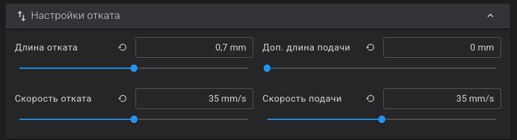

FAQ¶
Häufig gestellte Fragen¶
Info
Die Mod wurde installiert.
Sie möchten nichts weiter ausprobieren – drucken Sie einfach wie gewohnt.
Es ist nichts zu konfigurieren oder zu ändern.
Sie sind bereit, fortzufahren? Lesen Sie dazu die Dokumentation.
Wie sich Z-Mod von KlipperMod/nativer Firmware unterscheidet¶
Der Unterschied zwischen KlipperMod und Z-Mod:
- KlipperMod verwendet reinen Klipper mit einem Minimum an flashforge 5m(pro) spezifischen Änderungen
- Z-Mod verwendet den Standard Klipper aus der nativen Firmware sowie Klipper 13.
- KlipperMod verwendet KlipperScreen als Bildschirm für den Drucker.
- Z-Mod verwendet den nativen Bildschirm oder GuppyScreen/HelixScreen anstelle von KlipperScreen
- KlipperMod verwendet moonraker-Timelapse
- Z-Mod verwendet moonraker-telegram-bot auf einem EXTERNEN Host, der Timelapse oder TimeLapse plugin unterstützt.
Unterschiedliche Philosophie.
- KlipperMod ist im Wesentlichen eine alternative Firmware-Implementierung.
- Z-Mod ist ein minimaler Eingriff in die native Firmware. Alle Funktionen der nativen Firmware werden beibehalten.
Deshalb wird es keine G17, G18, G19 in Z-Mod geben - obwohl das einfach ist. Es wird keine Updates für den nativen Klipper geben, keine Umbenennung oder Änderung von Standardmakros, Einstellungen, Pin-Namen usw.
Z-Mod basiert NICHT auf KlipperMod und ist auch keine Weiterentwicklung davon. Das heißt, Z-Mod verwendet einige Makros und Skripte von KlipperMod, und nutzt auch Entwicklungen von KlipperMod. Aber Sie sollten von Z-Mod kein ähnliches Verhalten wie von KlipperMod erwarten.
Z-Mod ist binär inkompatibel mit KlipperMod.
Was ist in KlipperMod und was ist nicht in Z-Mod:¶
- KlipperScreen - Bildschirm für Drucker. In Z-Mod ist es statt des KlipperScreen ein nativer Bildschirm oder GuppyScreen/HelixScreen
- Moonraker-Timelapse - Z-Mod verwendet Telegram-Bot oder TimeLapse-Plugin.
- Netzwerkeinrichtung über iwd/wpa_supplicant (im Falle von GuppyScreen/HelixScreen) - im Z-Mod erfolgt die Netzwerkeinrichtung über den nativen Bildschirm, der Netzwerkstart ist auch im nicht-nativen Bildschirm-Modus möglich
Was ist in Z-Mod und was ist nicht in KlipperMod:¶
- Unterstützung AD5X
- Unterstützung für die folgenden Sprachen: Englisch, Deutsch, Französisch, Italienisch, Spanisch, Chinesisch, Japanisch, Koreanisch.
- Native Bildschirmfunktion
- Stromausfall Druckwiederherstellung
- Shaper-Entfernung mit Diagrammerstellung unter Berücksichtigung von SCV (square_corner_velocity).
- Überprüfung und Wiederherstellung nativer Dateisystemdateien/Rechte/symbolischer Links
- Automatische Aktualisierung von
Fluidd/Mainsail/Moonrakerund Z-Mod über das Netzwerk - Entware
- Fehler behoben E0017
- Zusätzlich unterstützt: GuppyScreen/HelixScreen: PID-Kalibrierung, Dämpfersteuerung, Firmware-Rückzug, Düsenreinigung, Dehnungsmessstreifen-Reset, Schraubenjustierung, ColdPull, verbesserte Bettnivellierung
- Feste Lüftersteuerung für die Motorkühlung. Die Lüfter schalten sich automatisch ein, sobald die Motoren laufen. Bei der Standard-Firmware nur während des Druckvorgangs.
- Adaptive Bettnivellierung KAMP
- PID-Kalibrierung von Extruder und BED einschließlich über GuppyScreen/HelixScreen.
- Implementierung von COLDPULL/coldpull (Düsenreinigung) ohne Kraftaufwand. Durchführung von dieser Algorithmus
Was ist in Z-Mod und was ist nicht in nativer Firmware:¶
- Moonraker/Fluidd/Mainsail-Unterstützung
- Telegram-Bot-Unterstützung
- Klipper 13-Unterstützung
- Alle Funktionen, die im Vergleich zu KlipperMod aufgeführt sind.
- Die native Firmware sendet eine Menge Daten an chinesische Server, dies kann durch die Verwendung von zmod mit GuppyScreen/HelixScreen vermieden werden.
Speichern von Einstellungen¶
Zugriff auf den Ordner mod_data über die fluidd-Weboberfläche.
Konfiguration 
Konfigurationsdateien mod_data
- Benutzerdefinierte Klipper-Einstellungen werden in
mod_data/user.cfggespeichert, wodurchprinter_base.cfgund Z-Mod-Dateien überschrieben/ergänzt werden können. - Benutzerdefinierte Moonraker-Einstellungen müssen in die Datei
mod_data/user.moonraker.confeingetragen werden. - Benutzerdefinierte Melodien werden in
mod_data/midi/gespeichert. - Globale Mod-Einstellungen werden mit dem Makro SAVE_ZMOD_DATA gespeichert nyuhler
- Der Code, der ausgeführt werden soll, wenn der Drucker ausgeschaltet wird, wird hier gespeichert:
mod_data/power_off.sh. - Der Code, der beim Einschalten des Druckers ausgeführt werden soll, wird hier gespeichert:
mod_data/power_on.sh.
Die zmod- und Plugin-Dateien dürfen nicht verändert werden, da dies das Update-System beeinträchtigen würde.
Jede Funktion kann in mod_data/user.cfg oder printer.cfg überschrieben werden.
Bekannte Funktionen:¶
- Bei Aktionen wie
M109(Extruderheizung),M190(Bettheizung), PID-Kalibrierung oder jeglichem G-Code-Pausieren friert der Standardbildschirm ein. - Beim Neustart von Klipper wird der Standardbildschirm eingefroren (nach dem Speichern von Table Map, PID, Shaper, etc.), verwenden Sie NEW_SAVE_CONFIG für den Neustart.
- Nach dem Abbrechen eines Druckvorgangs drücken Sie auf dem nativen Bildschirm "OK" (verwenden Sie CLOSE_DIALOGS oder FAST_CLOSE_DIALOGS).
- Der Standardbildschirm lädt beim Starten eines Druckvorgangs immer das Profil
DEFAULT_MESHund löscht dasDEFAULTProfil nach dem Druckvorgang.
Merkmale der Version ohne nativen Bildschirm¶
- Entfernen Sie den gesamten Start-G-Code und verwenden Sie die Makros START_PRINT und END_PRINT.
- Die Standardkamera ist deaktiviert; verwenden Sie die Alternative über CAMERA_ON starten.
- Gegebenenfalls ist es notwendig, den Parameter
Z_OFFSETmanuell in das Makro START_PRINT zu schreiben oder den globalen Parameter LOAD_ZOFFSET zu verwenden, der den Z-Offset aus den globalen Parametern lädt, die zuvor über SET_GCODE_OFFSET gespeichert wurden. crot. - Wenn Sie den Z-Offset vom nativen Bildschirmmodus in den nicht-nativen Bildschirmmodus übertragen wollen, rufen Sie das Makro
LOAD_ZOFFSET_NATIVEauf. Es liest den Z-Offset-Wert vom nativen Bildschirm und wendet ihn auf den nicht-nativen Bildschirmmodus an. - Das Bettnetz wird beim Start automatisch geladen.
-
Das FlashForge-Protokoll wird nicht unterstützt (wird vom nativen Bildschirm verarbeitet). Verwenden Sie "Octo/Klipper".
- Host Type:
Octo/Klipper - Printer Agent:
Moonraker - Hostname:
IP_printer:7125 - Device UI:
IP_printerorIP_printer:80
In Orca ab Version 2.4.2 deaktivieren Sie die Übertragung von 3MF-Dateien:
Druckerprofil->Allgemeine Informationen->Erweitert->Use 3MF instead of G-codedeaktivieren (Häkchen entfernen). - Host Type:
Was ist der Unterschied zwischen der Arbeit mit und ohne nativen Bildschirm¶
Der Drucker kann in zwei Modi betrieben werden:
- Mit nativem Bildschirm - in diesem Fall wird fast die gesamte Logik über den nativen Bildschirm gesteuert und viele Dinge können nicht geändert werden.
- Ohne nativen Bildschirm - in diesem Fall werden alle Funktionen vom Z-Mod gesteuert. Das bedeutet nicht, dass Sie den Bildschirm hardwaremäßig deaktivieren oder ihn durch einen anderen ersetzen müssen. Im nicht-nativen Bildschirmmodus können Sie den alternativen Software-Bildschirm von GuppyScreen/HelixScreen verwenden oder den Bildschirm ganz ausschalten und er wird ausgeschaltet.
Warnung
Deaktivieren Sie den Bildschirm nur, wenn Sie die Funktionen Bettnivellierung, Z-Offset und die Makros START_PRINT/END_PRINT vollständig verstehen.
Unser Drucker hat 128 Megabyte Arbeitsspeicher, von denen die Hälfte vom System belegt wird und 13 Megabyte (20 in älteren Versionen der nativen Firmware) von der nativen Bildschirmsteuerung belegt werden.
Wenn wir den nativen Bildschirm deaktivieren DISPLAY_OFF, sparen wir Speicher.
Das Deaktivieren des Bildschirms spart RAM, ändert aber die Druckverwaltung (Start/Pause/Fortsetzen/Abbrechen/Wiederherstellung). Passen Sie den Start-/End-G-Code entsprechend an. elk
Info
Deshalb ist es notwendig, den Start- und End-G-Code zu ändern. war.
Ohne Bildschirm wird der Z-Offset des Bildschirms nicht angewendet, und muss als Parameter an START_PRINT oder über globale Parameter übergeben werden. Mehr lesen
Lesen Sie Merkmale der Version ohne nativen Bildschirm.
Was ist MACROS? Wie man es ausführt, herunterlädt und benutzt.¶
Ein Makro ist ein kleines Programm in der Klipper/Gcode-Sprache.
Es kann aufgerufen werden:
- Aus einer GCODE-Datei
- Von der Fluidd/Mainstaill-Konsole aus Igel
Ich verwende die Bildschirmversion. Ich sende eine Datei zum Drucken, aber auf dem Bildschirm wird eine Temperatur von 0 °C angezeigt und der Druckvorgang startet nicht.¶
Fügen Sie diese beiden Zeilen ganz am Anfang des Startcodes in den Einstellung vom Drucker unter Maschinen G-Code ein:
M190 S[bed_temperature_initial_layer_single]
M104 S[nozzle_temperature_initial_layer] T{single_extruder_multi_material ? 0 : initial_extruder} T{single_extruder_multi_material ? 0 : initial_extruder}
Ohne diese Zeilen weiß der Druckerbildschirm nicht, auf welche Temperatur die Düse und das Bed erwärmt werden sollen. hippopotamus
Nach der Installation von Z-Mod ist mein Bildschirm tot und reagiert nicht mehr auf Tastendrucke.¶
- Installieren Sie das letzte Update der nativen Firmware und Z-Mod
- Lesen Sie die Bekannte Funktionen
- Möglicherweise haben Sie den Bildschirm ausgeschaltet. Schalten Sie ihn mit dem Makro DISPLAY_ON ein.
Müssen Sie etwas am Startcode ändern?¶
Wenn Sie mit dem nativen Bildschirm arbeiten, brauchen Sie nichts zu ändern.
Wenn Sie im nicht-nativen Bildschirm/Guppy-Modus (Helixscreen) arbeiten (und es wird auch empfohlen, wenn Sie mit einem Bildschirm arbeiten), ersetzen Sie den gesamten Startcode:
START_PRINT EXTRUDER_TEMP=[nozzle_temperature_initial_layer] BED_TEMP=[bed_temperature_initial_layer_single]
M190 S[bed_temperature_initial_layer_single]
M104 S[nozzle_temperature_initial_layer] T{single_extruder_multi_material ? 0 : initial_extruder} T{single_extruder_multi_material ? 0 : initial_extruder}
SET_PRINT_STATS_INFO TOTAL_LAYER=[total_layer_count]
START_PRINT EXTRUDER_TEMP= BED_TEMP= sollte in eine Zeile geschrieben werden.
Und der Endcode lautet:
END_PRINT
Für eine korrekte Layerzählung in Fluidd fügen Sie dem Code vor dem Layerwechsel (G-Code vor dem Schichtwechsel) Folgendes hinzu:
SET_PRINT_STATS_INFO CURRENT_LAYER={layer_num + 1}
Um die automatische Nivellierung für jeden Druck zu aktivieren, geben Sie dies einmalig in der Fluidd/Mainsail-Konsole ein:
SAVE_ZMOD_DATA CLOSE_DIALOGS=2 PRINT_LEVELING=1 USE_KAMP=1
Einstellungen WLAN-Symbol Netzwerkmodus aktivieren Sie Nur lokale Netzwerke.
Lesen Sie die Dokumentation von START_PRINT und SAVE_ZMOD_DATA, damit Sie die erweiterten und nützlichen Funktionen von Z-Mod nutzen können.
Wenn Sie den Rückzug von der Firmware verwenden wollen, lesen Sie Was-ist-ein-firmware-rückzug und fügen Sie Folgendes hinzu unter Filamentprofil Erweitert Filamentstart-G-Code:
SET_RETRACTION RETRACT_LENGTH=[filament_retraction_length]
Waschbär
So funktioniert der Z-Offset¶
Lesen Sie den Artikel "Wie Z-Offset auf unserem Drucker funktioniert".
Bei Verwendung des Bildschirms beeinflusst die Modifikation den Z-Offset nicht. Der auf dem Bildschirm gespeicherte Z-Offset wird verwendet.
Der Offset für native und nicht-native Bildschirme ist unterschiedlich; jeder Bildschirmtyp hat sein eigenes Verhalten und wird separat konfiguriert.
Verwenden Sie LOAD_ZOFFSET_NATIVE, um den z-Offset vom nativen Bildschirm in den nicht-nativen Bildschirm-Modus zu kopieren.
Es wird der auf dem Bildschirm gespeicherte z-Offset verwendet.
Z-Offset-Anpassungen über Fluidd/Mainsail/GuppyScreen/HelixScreen sind nur bis zum Neustart wirksam. Änderungen ohne Kenntnis der Düsenbewegung werden nicht empfohlen.
Jeder Aufruf von SET_GCODE_OFFSET (der automatisch aufgerufen wird, wenn man den Z-Offset von Fluid/Mainsail/GuppyScreen/HelixScreen ändert) speichert den aktuellen Z-Offset in den globalen Parametern des Mods.
Aber dieser gespeicherte Wert wird nur verwendet, wenn der globale Parameter LOAD_ZOFFSET angegeben ist (dStandardmäßig deaktiviert; aktivieren mit SAVE_ZMOD_DATA LOAD_ZOFFSET=1), der native Bildschirm nicht verwendet wird und das Makro START_PRINT verwendet wird.
Sie können auch die Parameter START_PRINT verwenden, um den Z-Offset zu setzen
- Z_OFFSET - Einstellung des Z-Offsets (0.0)
Welche Optionen stehen für die Bettnivellierung zur Verfügung?¶
Um die automatische Nivellierung für jeden Druck zu aktivieren, geben Sie dies einmalig in der Fluidd/Mainsail-Konsole ein:
SAVE_ZMOD_DATA CLOSE_DIALOGS=2 PRINT_LEVELING=1 USE_KAMP=1
Der native Bildschirm verwendet immer:
MESH_DATA- VoreinstellungDEFAULT- wennLeveling(Aufbau der Tabellenkarte vor dem Druck) angekreuzt ist, und nach dem Druck wird dieDEFAULTKarte immer gelöscht.
Ohne den nativen Bildschirm wird das automatische Mesh beim Start automatisch geladen.:
auto- sie wird automatisch geladen, wenn der Drucker eingeschaltet wird.
Wenn Sie beim Drucken eine andere Karte verwenden wollen (z.B. PETG_75), dann:
- Schalten Sie die automatische Kalibrierung in den globalen Parametern aus.
SAVE_ZMOD_DATA PRINT_LEVELING=0
-
Geben Sie das Mesh über den Parameter
MESHin START_PRINT an. Beispiel:START_PRINT MESH=PETG_75. -
Laden Sie das Filamentprofil über
BED_MESH_PROFILE LOAD=PETG_75. Stellen Sie sicher, dass Profil undSTART_PRINTübereinstimmen, oder deaktivieren Sie die Düsenreinigung inSTART_PRINT. -
Nivellieren Sie das Druckbett vorab mit AUTO_FULL_BED_LEVEL. Beispiel:
AUTO_FULL_BED_LEVEL EXTRUDER_TEMP=230 BED_TEMP=75 PROFILE=PETG_75.
Über globale Parameter¶
Ich empfehle die Verwendung globaler Parameter, die einmal konfiguriert und bei jedem Druckvorgang verwendet werden. In diesem Fall ist es nicht notwendig, den Start- und End-G-Code zu ändern.
Parameter PRINT_LEVELING:
- Entfernt die Bettnetzkarte bei jedem Druckvorgang
- Wenn Sie mit dem Bildschirm arbeiten, wird die Bettnetzkarte vom nativen Bildschirm entfernt, so wie es der Fall wäre, wenn Sie eine Datei auf dem Bildschirm ausgewählt und das Kontrollkästchen
LEVELINGangeklickt hätten. - Wenn der Parameter 1
SAVE_ZMOD_DATA PRINT_LEVELING=1lautet, geht der Drucker beim Senden von Dateien über Orca/Fluidd/Mainsail davon aus, dass Sie die zu druckende Datei am Originalbildschirm ausgewählt und das Kontrollkästchen "Ausrichtung" aktiviert haben. Jedes Mal, wenn Sie in diesem Fall drucken, wird das Bettnetz erfasst. - Wenn Sie im nicht-nativen Bildschirmmodus arbeiten und das Makro START_PRINT im anfänglichen G-Code verwenden, wird das Bettnetz ebenfalls bei jedem Druckvorgang gelöscht
Um diese Funktion zu aktivieren, müssen Sie einmal das Makro SAVE_ZMOD_DATA, den Parameter PRINT_LEVELING
SAVE_ZMOD_DATA PRINT_LEVELING=1 (muss in der Fluidd/Mainsail Konsole eingegeben werden). In diesem Fall wird das Bettnetz bei jedem Druck entfernt.
-
Um die Bettnetzkarte vom nativen Bildschirm zu entfernen, gehen Sie zu
EinstellungenWifi-SymbolNetzwerkmodusaktivieren Sie den Schieberegler Nur lokale Netzwerkeüber das Menü des Druckerbildschirms ein. -
Wenn diese Option aktiviert ist, werden alle START_PRINT-Parameter, die sich auf die Erstellung/Verwendung einer Bettnetzkarte beziehen, ignoriert (FORCE_LEVELING, FORCE_KAMP, SKIP_LEVELING, MESH).
Parameter USE_KAMP:
- Klipper Adaptive Meshing and Purging (KAMP) kann aktiviert werden, dann wird nicht das gesamte Bettnetz entfernt, sondern nur die Teile mit druckbaren Modellen. Automatisches Table-Map-Skimming wird nicht ausgelöst!. Dieser Parameter legt fest, dass bei Aufruf des Table Map Skimming stattdessen KAMP ausgeführt werden soll.
Um diese Funktion zu aktivieren, müssen Sie das Makro SAVE_ZMOD_DATA einmal konfigurieren, Parameter USE_KAMP
SAVE_ZMOD_DATA USE_KAMP=1 (muss in der Fluidd/Mainsail Konsole eingegeben werden). In diesem Fall wird die adaptive Bettnetzkarte verwendet, wo immer dies möglich ist, auch wenn die Bettnetzkarte mit dem nativen Bildschirm über das Netzwerk erfasst wird.
Durch Änderung des Startcodes und des Makros START_PRINT¶
Wenn Sie die globalen Parameter (SAVE_ZMOD_DATA PRINT_LEVELING=0) nicht verwenden wollen, stehen Ihnen die folgenden Parameter des Makros START_PRINT, das im Start-G-Code geschrieben wird, zur Verfügung.
- FORCE_LEVELING - erzwingt den Aufbau einer Tabellenkarte, True - aufbauen, False - nicht aufbauen (False)
- FORCE_KAMP - Start des Aufbaus der adaptiven Tabellenkarte, True - ja, False - nein (False).
- SKIP_LEVELING - unter keiner Bedingung die Tabellenkarte aufbauen. Stärker als FORCE_KAMP und FORCE_LEVELING (False)
- MESH - Name der zu ladenden Table Map, wenn nicht angegeben, wird nichts geladen, wenn sie nicht existiert, wird sie erstellt ("").
Warnung
Der Parameter FORCE_LEVELING oder FORCE_KAMP ist kein separates Makro, sondern ein Parameter des Startdruck-Makros.
Beispiele:
Entfernen des kompletten Bettnetz:
START_PRINT EXTRUDER_TEMP=[nozzle_temperature_initial_layer] BED_TEMP=[bed_temperature_initial_layer_single] FORCE_LEVELING=True
M190 S[bed_temperature_initial_layer_single]
M104 S[nozzle_temperature_initial_layer] T{single_extruder_multi_material ? 0 : initial_extruder} T{single_extruder_multi_material ? 0 : initial_extruder}
Entfernen des adaptiven Bettnetz:
START_PRINT EXTRUDER_TEMP=[nozzle_temperature_initial_layer] BED_TEMP=[bed_temperature_initial_layer_single] FORCE_KAMP=True
M190 S[bed_temperature_initial_layer_single]
M104 S[nozzle_temperature_initial_layer] T{single_extruder_multi_material ? 0 : initial_extruder} T{single_extruder_multi_material ? 0 : initial_extruder}
Algorithmus zum Entfernen der Bettnetzkarte im Macro START_PRINT:
- Wenn MESH nicht leer ist, wird die Karte mit dem im Parameter MESH angegebenen Namen geladen
- Wenn
SKIP_LEVELING=True- wird die Bettnetzkarte unter keinen Umständen entfernt - Andernfalls, wenn
FORCE_CAMP=Truegesetzt ist, wird KAMP entfernt. - Andernfalls, wenn die Bettnetzkarte nicht geladen ist (der native Kopf lädt immer die
MESH_DATAKarte) oder wennFORCE_LEVELING=True, wird der Aufbau der Bettnetzkarte gestartet, aber sie wird nicht selbst gespeichert
Über Makros und Schaltflächen in Fluidd¶
Wenn Sie das Makro START_PRINT und die globalen Parameter nicht verwenden wollen, stehen Ihnen die folgenden Makros zur Verfügung:
-
AUTO_FULL_BED_LEVEL (Fluidd button
BED LEVELING) - Entfernt das Bettnetz und reinigt die Düse bei der angegebenen Bett- und Extrudertemperatur. Die Heizung wird nach dem Entfernen des Bettnetz abgeschaltet. -
Das gleiche Makro kann mit der Schaltfläche Fluidd/Mainsail aufgerufen werden, es heißt
BED CALIBRATION. Nachdem Sie die Bettnetz bei einer bestimmten Temperatur entnommen haben, können Sie die SchaltflächeSave Parametersdrücken, und die Bettnetzkarte wird in der Dateiprinter.cfggespeichert.
Sie kann auch in den Start-G-Code geschrieben werden:
AUTO_FULL_BED_LEVEL EXTRUDER_TEMP=[nozzle_temperature_initial_layer] BED_TEMP=[bed_temperature_initial_layer_single]
M190 S[bed_temperature_initial_layer_single]
M104 S[nozzle_temperature_initial_layer] T{single_extruder_multi_material ? 0 : initial_extruder} T{single_extruder_multi_material ? 0 : initial_extruder}
-
KAMP - Adaptive Bettnetzkalibrierung mit Düsenreinigung
EXTRUDER_TEMP=[nozzle_temperature_initial_layer] BED_TEMP=[bed_temperature_initial_layer_single] -
BED_MESH_CALIBRATE - Entfernung der Bettnetzkarte durch das Standard-Klipper-Macro.
Es wird nicht empfohlen, es zu verwenden, da keine Düsenreinigung durchgeführt wird, so dass die Ergebnisse falsch sein werden. Adaptive Table Map von Orca, überhaupt nicht empfohlen, da sie die Punktentfernung nicht zufällig vornimmt, was bedeutet, dass die Düse beim Drucken identischer Modelle jedes Mal an denselben Punkten misst, was zum Auftreten von Mikrolöchern und infolgedessen zu einer falschen Table Map führt.
- Standard-Klipper-Macros (nicht empfohlen)
Verwendung von Standard-KLIPPER-Befehlen¶
Um mit MESH zu arbeiten, gibt es Standard-KLIPPER-Macros:
- BED_MESH_CALIBRATE - Bettnetzkarte entfernen
- BED_MESH_OUTPUT - Bettnetzkarte ausgeben
- BED_MESH_PROFILE - Bettnetzkarte laden, löschen, speichern
Wenn Sie eine Druckbettkarte mithilfe von KLIPPER-Befehlen im Filamentprofil laden, stellen Sie sicher, dass Sie in START_PRINT und im Filamentprofil dieselbe Druckbettkarte verwenden. Alternativ können Sie die Düsenreinigung in START_PRINT deaktivieren und separat im Filamentprofil ausführen.
Es wird dringend empfohlen, die Optionen für die Düsenreinigung zu lesen:
- CLEAR_NOZZLE - Düsenreinigung wie in nativer Firmware
- PRECLEAR - Zusätzliche Düsenreinigung, wenn die Bettkarte entfernt wird.
- CLEAR - vier Algorithmen (Sie können Ihre eigenen hinzufügen) für die zeilenweise Düsenreinigung vor dem Druck.
Warum tauchen in der Dokumentation immer wieder Tiernamen auf?¶
Niemand mag/will die Dokumentation lesen, obwohl 90% der Fragen in ihr gelöst und beschrieben werden.
Diejenigen, die sie nicht lesen, sagen auch gerne, dass sie alles gelesen haben.
Deshalb habe ich die Namen der Tiere opossum im Text verteilt und werde sie fragen, wenn sie eine andere Frage aus der Dokumentation stellen. Wenn Sie das Tier, das für Ihre Frage im Text versteckt war, nicht nennen konnten, dann haben Sie die Dokumentation nicht gelesen.
Wenn Sie hierher verwiesen wurden. Lesen Sie die Dokumentation und nennen Sie das Tier, das auf Ihrer Frage steht, und Sie werden auf jeden Fall Hilfe bekommen:
- Häufig gestellte Fragen
- Tipps zur Verbesserung der Druckerstabilität
- Mod installieren/verbessern/deinstallieren
- Makro-Liste
- Speichereinstellungen
- Bekannte Funktionen
Ich möchte Z-Mod löschen - muss ich alles neu kalibrieren?¶
Nein - alle Einstellungen bleiben erhalten
Was ist eine alternative Kamera?¶
Die native Kamera, die über den Bildschirm eingeschaltet wird, hat eine Reihe von Nachteilen.
- Hoher RAM-Verbrauch
- Schlechte Bildqualität
- Nur eine Verbindung zur Kamera. Sobald Sie sie in Orca Slicer öffnen, wird sie im Browser nicht mehr angezeigt
- Regelmäßige Bildaussetzer
Alternative Kamera, erlaubt die Änderung der Auflösung, fps, erlaubt mehrere Verbindungen, komprimiert das Bild nicht, einfaches Neustarten und Anpassen über die Macro funktion. zayats.
- Deaktiviert die native Kamera auf dem Druckerbildschirm.
- Rufen Sie das Makro CAMERA_ON
Lesen: Ich habe einen Drucker installiert und Z-Mod hat meine Kamera versteckt!.
Kamera-Einrichtung¶
Haupteinstellungen
| Parameter | Was bedeutet | Normaler Wert |
|---|---|---|
| WIDTH | Bildbreite | 640 |
HÖHE |
Bildhöhe | 480 |
FPS |
Wie viele Bilder pro Sekunde | 20 |
VIDEO |
Kameranummer | video0 |
FS |
Problemkameras reparieren (1 für ja, 0 für nein) | 0 |
STREAMER |
Kameraprogramm | auto |
FORMAT |
Bildformat (nur ustreamer) | MJPEG |
Was ist ein Streamer?
Ein Streamer ist ein Programm, das ein Bild von einer Kamera aufnimmt und es in einem Browser anzeigt.
Es sind zwei Optionen verfügbar:
- mjpg_streamer - einfaches Programm, funktioniert nur mit MJPG-Kameras.
- ustreamer - leistungsfähiger, benötigt aber mehr Speicher, unterstützt verschiedene Kameras.
Der Parameter "STREAMER=auto" wählt den geeigneten Streamer aus.
Bildformate (nur für ustreamer)
Folgende Formate stehen zur Auswahl: YUYV, YVYU, UYVY, RGB565, RGB24, BGR24, MJPEG, JPEG.
Standardmäßig wird MJPEG verwendet.
Befehlsbeispiele
Einfaches Starten der Kamera video0 über mjpg_streamer:
CAMERA_ON VIDEO=video0
Starten der Kamera video0 über ustreamer mit Einstellungen:
CAMERA_ON VIDEO=video0 STREAMER=ustreamer FORMAT=YUYV WIDTH=640 HEIGHT=480
Wo kann man das Bild sehen?
In einem Browser öffnen: http://printer_ip_address:8080.
Dort können Sie Helligkeit, Kontrast und andere Einstellungen ändern.
Wenn es Probleme gibt
Sie können die Kamera nicht sehen? Starten Sie:
CAMERA_ON VIDEO=video99
Logs (Fehlerprotokolle) befinden sich im Ordner: log/cam/.
Ich habe einen Drucker installiert und Z-Mod hat meine Kamera versteckt! Ich konnte sie in Orca-FF sehen, aber jetzt ist sie weg!¶
In der Weboberfläche (fluidd) gehen Sie zu Einstellungen Videokameras.
Dort gibt es bereits eine Videokamera, Sample_Settings_Camera. Gehen Sie zu ihr und sehen Sie sich die Einstellungen an.
Erstellen Sie eine neue Kamera mit ähnlichen Einstellungen wie die Kamera Sample_Settings_Camera:
- Streamtyp:
MJPEG-Stream. - Stream-URL:
http://printer_ip_address:8080/?action=stream. - Schnappschuss-URL:
http://printer_ip_address:8080/?action=snapshot - printer_ip_address - ersetzen Sie durch die IP-Adresse Ihres Druckers.
In Versionen, die älter sind als 1.4.3, können Sie auch angeben:
- Streamtyp:
MJPEG-Stream. - Stream-URL:
/webcam/?action=stream. - Schnappschuss-URL:
/webcam/?action=snapshot.
Wenn Sie die Auflösung und die Bildrate anpassen, die Kamera des Telegram-Bots verwenden, den RAM-Verbrauch reduzieren oder parallele Verbindungen erlauben wollen, müssen Sie Alternative Kamera verwenden. Kroot
Statische IP
Legen Sie auf dem Router eine statische IP-Adresse für den Drucker fest, sonst ändert sie sich und die Kamera stürzt ab.
Ich habe 2 Kameras / wie kann ich die Kamera deaktivieren/umkehren¶
Wenn Sie keine Kamera haben, oder die automatischen Kameraeinstellungen Ihnen nicht zusagen, müssen Sie die Datei mod_data/user.moonraker.conf über Fluidd/Mainsail öffnen.
Und fügen Sie folgendes hinzu:
Um die Kamera zu deaktivieren:
[webcam video]
aktiviert: false
Um die Kamera zu drehen:
[webcam video]
Drehen: 90
Ich habe die neueste Version installiert und der Entwickler sagt, dass ich ein Upgrade durchführen soll.¶
-
Vergewissern Sie sich, dass Sie die neueste Version vom Flash-Laufwerk installiert haben
-
Rufen Sie in Mainsail folgendes auf.
Maschine :arrow_right: Update-Manger :arrow_right: Klicken Sie auf Nach Update suchen. -
Aktualisieren Sie alle Komponenten von treeflyer.
-
Starten Sie den Drucker neu
Kann MCU nicht aktualisieren¶
Nach einem Neustart erscheint ein Fehler
!! Cannot update MCU 'eboard' config as it is shutdown
Neustart des Druckers im abnormalen Betriebsmodus.
Aus diesem Grund werden Sie aufgefordert, das Gerät aus- und wieder einzuschalten, wenn Sie die native Firmware installieren.
Beim Neustart wird die MCU nicht von der Stromversorgung getrennt, was bedeutet, dass das in die MCU geschriebene Programm weiterläuft. Dieses Programm versucht, mit Klipper zu kommunizieren, der während des Neustarts nicht verfügbar ist. Dies führt dazu, dass der MCU einfriert oder die Verbindung abbricht.
In diesem Fall müssen Sie sich für eine Option entscheiden:
- Rufen Sie
FIRMWARE_RESTARTauf, in diesem Fall bleibt der native Bildschirm hängen. - Schalten Sie den Drucker aus und schalten Sie
Der Unterschied zwischen REBOOT und FIRMWARE_RESTART ist, dass REBOOT Linux und damit auch Klipper auf dem Motherboard neu startet, FIRMWARE_RESTART startet Klipper teilweise neu und startet die MCU komplett neu
Ich gehe über Orca/Browser zum Drucker und sehe Welcome to Moonraker¶
Welche Ports verwendet Z-Mod?
7125- dort befindet sich Moonraker.8080- dort befindet sich die Kamera.80- dort arbeitet Fluidd/Mainsail.
Um auf den Drucker zuzugreifen, geben Sie einfach die Drucker-IP ein, ohne die Portnummer anzugeben. Hase
Ich habe das Webinterface umgestellt und jetzt funktioniert nichts mehr.¶
Wenn du das Interface mit dem Makro WEB umschaltest whoosh
-
Das erste, was zu tun ist, ist
Strg + F5oderStrg + Umschalt + RoderOption + Befehl + Ezu drücken. -
Wenn Sie ein Problem in Orca haben, müssen Sie
Strg + F5oderStrg + Umschalt + RoderOption + Befehl + Edrücken fox -
Wenn Sie einen anderen Browser verwenden, müssen Sie den Cache und die Cookies löschen und die IP-Adresse des Druckers ohne zusätzliche Zeichen in der Adressleiste aufrufen.
http://PRINTER_IP/
Wenn dies nicht hilft, verwenden Sie einen anderen Browser: Firefox, Chrome, Yandex, Opera, etc.
Z-Mod enthält Entware - wie benutzt man es?¶
Warunung
Es gibt keine Entware im AD5X
Sie müssen sich per SSH mit dem Drucker verbinden (root:root port 22)
Führen Sie den Befehl:
export PATH="$PATH:/opt/bin/:/opt/sbin/"
Sie können dann mc oder opkg ausführen
- Aktualisieren der Paketdatenbank:
opkg update - Installieren eines Pakets:
opkg install mc
Kataloge, die von entware erstellt und verwendet werden:
- /opt/bin
- /opt/etc
- /opt/home
- /opt/lib
- /opt/libexec
- /opt/Wurzel
- /opt/sbin
- /opt/share
- /opt/tmp
- /opt/usr
- /opt/var
Was ist ein Firmware Rückzug?¶
- In Z-Mod verfügt Fluidd/Mainsail über Schieberegler zur Anpassung von Rückzugsgeschwindigkeit und -distanz per Firmware.

-
Diese Einstellungen wirken sich nur dann auf den Druck aus, wenn die G-Code-Datei mit aktiviertem Firmware-Rückzug gesliced wurde.
-
Der Firmware-Rückzug ermöglicht die Anpassung des Rückzugs während des Druckvorgangs, ohne dass ein erneutes Slicen erforderlich ist.
Anstelle von Befehlen wie G1 E-.5 F2100 verwenden Sie G10 zum Einziehen und G11 zum Ausziehen.
Um dies in Orca zu aktivieren:
Druckereinstellungen Allgemeine Informationen Erweitert Firmware-Rückzug das Kontrollkästchen anklicken.
So ändern Sie die Standardeinstellungen für den Rückzug:
Über Fluidd/Mainsail. (Maschine mod_data user.cfg)
[firmware_retraction].
retract_length: 0.9
retract_speed: 35
unretract_extra_length: 0
untract_speed: 35
SET_RETRACTION wird normalerweise als Teil der Slicer-Konfiguration für jedes Filament gesetzt, da verschiedene Filamente unterschiedliche Parametereinstellungen erfordern:
Info
SET_RETRACTION [RETRACT_LENGTH=
RETRACT_LENGTHist die Länge des Gewindes für Rückzüge und Retraktionen.RETRACT_SPEED- Geschwindigkeit für den Rückzug.UNRETRACT_SPEED- die Rückzugsgeschwindigkeit wird durchUNRETRACT_SPEEDgesteuert und ist nicht besonders kritisch, obwohl sie oft niedriger ist alsRETRACT_SPEED.UNRETRACT_EXTRA_LENGTH- in manchen Fällen ist es nützlich, beim Zurückziehen eine kleine zusätzliche Länge hinzuzufügen.
Beispiel in Orca:
Filamentprofil Parameter überschreiben Rückzug Länge
Filamentprofil Erweitert Start G-Code:
SET_RETRACTION RETRACT_LENGTH=[filament_retraction_length]
Verwenden Sie GET_RETRACTION, um die aktuellen Einstellungen anzuzeigen.
Retract Substitutionsvariante von @minicx
SET_RETRACTION RETRACT_LENGTH={if not is_nil(filament_retraction_length[current_extruder])}[filament_retraction_length[current_extruder]]{else}[retraction_length]{endif} RETRACT_SPEED={if not is_nil(filament_retraction_speed[current_extruder])}[filament_retraction_speed[current_extruder]]{else}[retraction_speed]{endif}
AD5X Einzelheiten¶
Hilfe¶
Wie kontaktiere ich den Entwickler-Support?¶
Wie man das Bootlogo ändert¶
Das Logo befindet sich im Ordner mod_data/logo.
Logo Anforderungen:
- Größe 800x480 Farbtiefe 24 Bits
- AD5M: BMP-Format. Dateiname:
bootlogo.bmp. - AD5X: JPG-Format. Dateiname:
Logo.jpeg.
Laden Sie Ihr Logo in den Ordner mod_data/logo hoch.
Starten Sie den Drucker 2 mal neu.
Wenn Sie die Mod löschen, wird das ursprüngliche Logo wiederhergestellt. Wenn dies beim AD5M nicht geschehen ist:
- Sie müssen die den Mod installieren
- Laden Sie die Datei boot.bmp in den Ordner "mod_data/logo" hoch.
- Starten Sie den Drucker neu
{kind=link}
Logo von Alberto Maciel:
Keine Auslösung der Sonde nach vollständiger Bewegung¶
Dieser Fehler tritt üblicherweise auf, wenn die z-Achse während der Messung nicht ausreichend angehoben wird.
Dies lässt sich programmatisch wie folgt beheben:
Geben Sie in mod_data/user.cfg ein.
[bed_mesh]
horizontal_move_z: 5
Hardware – alle Schrauben müssen eingestellt sein und das Bett darf nicht verzogen sein.
Gewichtswert¶
Der Wert von WeightValue wird von den Wägezellen in Gramm angezeigt. Er wird in Grad dargestellt, da er über die Schnittstelle des Temperatursensors implementiert ist. Daher zeigen Fluidd und Mainsail Grad an.
Warum brauchen Sie diesen Sensor?
- Er kann verwendet werden, um den Z-Offset über das g28_tenz Plugin zu messen.
- Sie können den Druck stoppen, wenn die Düse ein Teil trifft oder ein Teil abgerissen wird. NOZZLE_CONTROL
- Ohne eine Neukalibrierung wird das Bed Mesh falsch vermessen.
MCU Protokollfehler¶
Hier sind einige Fehler, die von der MCU abhängen:
- MCU-Protokoll-Fehler
- Unbekannter Temperatursensor flashforge_loadcell
- Erforderlicher MCU-Befehl
- flashforge_loadcell: Erforderlicher MCU-Befehl
flashforge_loadcell_h1ist nicht verfügbar
Die Essenz all dieser Fehler ist, dass die Klipper-Version nicht mit der MCU-Version übereinstimmt.
Sie können die MCU-Version auf der Registerkarte System einsehen.
Du hast z.B. Klipper 13 laufen und verwendest die MCU von Klipper 11 oder 12.
Oder andersherum. Du hast einen nativen Klipper laufen - aber du hast die MCU für Klipper 13 geladen.
Wenn deine MCU-Version mit ?-20230317_182329-ubuntu20-virtual-machine beginnt, bedeutet dies, dass du die MCU für Klipper 12 (AD5X) oder Klipper 11 (AD5M/AD5M Pro) geladen hast.
Demzufolge muss Z-Mod die native Klipper-Bibliothek laden.
- Gehen Sie zu
mod_data/variables.cfgund löschen Sie die Zeileklipper13 = 1. - Speichern Sie die Datei
- Schalten Sie den Drucker aus und schalten Sie ihn wieder ein (nicht neu starten!).
Wenn dies nicht der Fall ist und Klipper läuft, dann führen Sie UPDATE_MCU FORCE=13 aus - dieser Befehl installiert die aktuelle MCU-Version
Wenn nichts hilft und Klipper nicht funktioniert:
- Zum nativen Klipper wechseln
- Installiere die native Werks-Firmware, was die native MCU installieren wird.
Das Filament ist ausgegangen oder wurde gestoppt¶
Bei AD5M müssen Sie die Sensorschritte durch Ausprobieren kalibrieren. Geben Sie dies ein in mod_data/user.cfg.
Erhöhen Sie diese Zahl. Einige Leute sind mit dem Standard 8 zufrieden, und einige Sensoren arbeiten nur bei 17 korrekt.
[filament_motion_sensor e0_sensor].
Erkennung_Länge: 8
Filament stau erkannt (IFS).
Für AD5X müssen Sie die Schritte des IFS-Sensors durch Auswahl kalibrieren. Schreiben Sie in mod_data/user.cfg.
Erhöhen Sie diese Zahl. Einige Leute sind mit dem Standardwert 10 zufrieden, und einige IFS arbeiten nur bei 17 korrekt.
[zmod_ifs_motion_sensor ifs_motion_sensor].
detektion_länge: 8
Darüber hinaus kann ein Filamentstopp im IFS folgende Ursachen haben:
- Der Extruder ist mit Spule 1 bestückt, Spule 2 wird jedoch herausgezogen. Verwenden Sie
SET_EXTRUDER_SLOT, um den aktuellen Extruder-Slot zu synchronisieren. - Neues Filament wird eingeführt, während sich altes Filament noch im Extruder befindet.
- Die 4-in-1-Module und ihre Schläuche haben unterschiedliche Längen. Passen Sie daher den Wert für
filament_unload_into_tubeinmod_data/filament.jsonan. Setzen Sie ihn auf 70 oder höher. Mehr lesen
Das Problem kann auch durch die Unfähigkeit, das Filament im IFS-Kanal zu entriegeln bedingt sein.
Mechanische Ursachen sind beispielsweise:
- Kunststoffspäne, die an der Andruckrollenwelle kleben.
- Eine Feder, die sich vom IFS-Kanalhebel gelöst hat.
Lösung
Entfernen Sie die Verunreinigungen, zerlegen Sie den Mechanismus und setzen Sie die Komponenten korrekt wieder zusammen.
Testen Sie nach der Reparatur den Druckvorgang und das Verhalten der Filamentverriegelung/-entriegelung mithilfe der IFS-Befehle.
Vor jedem Druckvorgang misst der Drucker die Mitte des Druckbetts.¶
Vor dem Drucken:
- heizt er das Bett und die Düse auf.
- reinigt die Düse.
- kühlt die Düse
- misst die Mitte des Bettes (Start des manuellen Z-Tasters. Verwenden Sie TESTZ, um die Position einzustellen)
- heizt die Düse
- startet den Druck
Dies ist eine Funktion der nativen Firmware ab der Version native Firmware:
- 1.1.8 AD5X
- 3.2.4 AD5M/AD5M Pro
Lösung:
- Native Firmware zurücksetzen auf Version 1.1.7.7 für AD5X, 3.2.3.3 für FF5M/FF5MPro
- Native Anzeige deaktivieren
E0120¶
Dies ist ein Klipper-Fehler.
Er wird meist durch die folgenden einfachen Maßnahmen behoben:
- Schalten Sie den Drucker aus
- 10 Sekunden warten
- Schalten Sie den Drucker wieder ein
Um zu sehen, was genau der Fehler ist:
- öffnen Sie Fluidd/Mainsail
- gehen Sie auf die Konsole und lesen Sie den Fehlertext
- Öffnen Sie den Telegram-Bot @zmod_help_bot und geben Sie den Fehlertext ein oder suchen Sie selbst in der Dokumentation nach der Beschreibung.
Wenn Sie den Fehler nicht beheben können, müssen Sie ein Ticket erstellen.